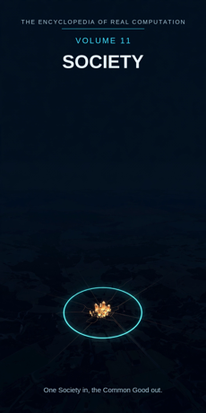

Chron.
The Encyclopedia of Real Computation

One Society in, the Common Good out.
Home domain: Sociology
One Society in, the Common Good out.
◉ A Principle .... Society ◎ B Purpose ...... Belonging ◉·◉ A.A Alpha ...... the Citizen ◉·◎ A.B Cross ...... the Custom △ X Primitive .... People ⚙ Y Protocol ..... Cooperation ⬢ Z Product ...... the Community ◐ i State ........ the Stranger ⚖ j Condition .... the Law ⊞ N Set .......... the Institutions ◷ h Time ......... the Generation ▣ C Context ...... the Culture ▦ D Domain ....... the Fabric ♥ E Emotion ...... Trust ➤ F Intention .... Governance ↻ pi Cycle ........ the Ritual ➔ phi Step ......... the Greeting ⚄ e Probability .. the Poll • h-bar Planck ..... the Person
Σ sigma Summation .. the Census
◈ gamma Scale ...... the Population Δ delta Change ..... Migration ⁂ sigma' Options ... the Movements Ω Omega Answer ..... the Common Good
Every volume of this encyclopedia does the same work. The Prologue figures the subject whole. Then come twenty-four chapters, one per term, each doing four jobs in plain English: what the term means, where it sits in the computation, how it works on the volume's one running example, and what breaks without it. Then the Data, whole. Then the Crossings. Then the Sum. The running example of this volume is one small town - a county seat of a few thousand people - watched closely to see what holds it together.
Society: people living together under shared customs, laws, and institutions, held together by belonging. Belonging: being counted as one of us - membership that is felt by the member and honoured by the rest.
◉ Society. ◎ Belonging = the root of Society: aimed at itself,
society asks who is inside. ◉·◉ the Citizen: society turned on itself becomes one person who carries it. ◉·◎ the Custom: society crossed with belonging - the habits that carry the crossing.
△ People = Society parted over the Institutions. ⚙ Cooperation =
the function of the People, the working applied. ⬢ the Community = People times Cooperation, the product. ◐ the Stranger = the root of negative Society: the one not yet belonging. ⚖ the Law = the condition, element by element: society stands while its law holds.
⊞ the Institutions = the set: the Family, the School, the
Workplace, the Market, the Town, the State. ◷ the Generation: society comes down through time. ▣ the Culture: where society stands. ▦ the Fabric = the Institutions crossed by the Study.
♥ Trust = the difference belonging makes when it lands. ➤
Governance = the intention that carries a context. ↻ the Ritual: the town returns to itself on schedule. ➔ the Greeting: one step of recognition, sized to a meeting. ⚄ the Poll: the odds a town carries about itself, read by asking. • the Person: the least piece, one human being. Σ the Census: all of society, summed as one count. ◈ the Population: the scale of the whole. Δ Migration: society's own measure of its change. ⁂ the Movements: the spread of what the town might do next. Ω the Common Good: the answer society resolves into.
IF If Society to Belonging, then People & Cooperation is the Community, or the Stranger while the Law for the Institutions, through the Generation, in the Culture, the Fabric, Trust, Governance, at the Ritual by the Greeting, with the Poll over the Person - sum the Census, scale the Population, change Migration, options the Movements - therefore the Common Good.
Stands below, after the chapters, figured whole: the Institutions crossed by the Study, twenty-four cells, and the six contexts.
The seven laws, run on this seed. Pythagoras: Society squared plus Belonging squared overlays the Culture squared - the triangle checks in the Where, the If, and the Data identically. Law of cosines: the tilt between society and belonging is set by context - in a village the angle is narrow and everyone is placed; in a metropolis it opens wide. Binomial: the middle term is the Custom, two times over - society shapes belonging, and belonging reshapes society. AM-GM: Belonging is the geometric mean between Society and the One - the single Person of Chapter 19. Log law: the Population of the Community is the Population of the People plus the Population of the Cooperation - reach adds where work multiplies. Complex modulus: the Stranger is counted in the size of the society; a town is larger, not smaller, for honestly counting who stands outside. Triangle inequality: no route from People to Community is shorter than Cooperation; skip it and you hold a crowd, labelled as such in the last term but one.
Society begins with the plainest material there is - people, one at a time - and joins them by cooperation into the one product no person can make alone: a community. Its honesty is printed at the front: the stranger is named, not hidden; the law is stated, so it can be argued with; the count is taken in the open, by census and by poll. Its time is the generation, its rhythm the ritual, its smallest coin the greeting, and its scale the population - the same town read as a street, as a county seat, as a dot in the nation. What it resolves into is not order alone and not warmth alone but the common good: the shared water, the safe street, the school that serves every child on it. One Society in, the Common Good out.
What it means. Society is people living together under shared customs, laws, and institutions. Its objects are not things but arrangements: who eats with whom, who decides, who is owed, who is one of us. It is the field whose laboratory is everywhere people are.
Where it sits. Society is the Principle of this volume, the seed: Belonging is its root, the Citizen its self-product, the Custom its cross. Every other term is society read one way.
How it works. Take one small town: a few thousand people, most of whom will never meet, sharing one water system, one school, one main street, and one name. Nobody designed the whole of it, yet it holds - or fails to hold - as one thing. Everything in this volume is society answering how.
What breaks without it. Remove the Principle and the other fields keep their facts and lose the weave: economics counts the town's money, medicine its fevers, and nobody studies the holding together itself.
What it means. Belonging is being counted as one of us: membership felt from inside and honoured from outside. It is what society is for - not mere crowding, which a platform of strangers achieves, but the standing of a person among people who would notice their absence.
Where it sits. Belonging is the Purpose, B = the square root of A: society aimed at itself extracts the question of who is inside. And B squared = A: belonging fully settled - a town where everyone is counted - is society itself, completed.
How it works. In the town, belonging is legible in small print: your name known at the post office, your table kept at the cafe, your absence asked after at the weekly gathering. None of it is law. All of it is the Purpose, working.
What breaks without it. A collection of people without belonging is an audience, not a society: it disperses when the show ends and owes nobody anything in the meantime.
What it means. The citizen is society embodied in one person: the one who votes, pays, volunteers, obeys, complains, and shows up. Institutions are paper until a citizen carries them; the citizen is where society's standards become one person's reflexes.
Where it sits. The Alpha, A times A: the field turned on itself. The same town held by a lifelong resident and by a newcomer differs in the company the fact keeps - history, obligation, favours owed both ways.
How it works. Watch one resident across one ordinary week: she serves on the school board Tuesday, staffs the volunteer fire crew's roster Thursday, argues about the water rate Saturday. The town is not above her or behind her. It is in her, scheduled.
What breaks without it. Unowned society is rules without carriers: ordinances nobody enforces, customs nobody performs, a town that exists on the map and nowhere else.
What it means. The custom is the interaction term: society crossed with belonging, the repeated habits that carry membership from one generation and one neighbour to the next. Custom is law's older, quieter sibling - enforced by expectation, not by courts.
Where it sits. The Cross, A times B, counted twice: society shapes belonging (the town decides what counts as one of us), and belonging reshapes society (each person counted changes what the town is). The force runs both directions or it does not run.
How it works. The town's annual fair is a custom with a midway attached: the same families run the same stalls, the same parade turns at the same corner. Move the fair and you will hear, within the hour, exactly how much of the town's belonging was stored in it. The crossing is measurable by its disturbance.
What breaks without it. With either factor at zero - institutions nobody feels part of, or warm feeling with no shared practice - the product is zero. Belonging that is never enacted evaporates; custom that includes nobody hardens into a fence.
What it means. People are the primitive material of this field: one person at a time, each a whole centre of needs, loyalties, and labour. A person makes no social claim alone; people are the clay from which every institution in this volume is thrown.
Where it sits. X = A times N: the Principle spread across the Set. Each institution receives society as its own people - the family as kin, the school as pupils, the market as buyers and sellers.
How it works. Begin the town's account with two primitives: the woman who runs the hardware store and the boy who has just moved in at the edge of town. Nothing social has been claimed yet except that both are people, both count as one, and everything the town is will be built out of ones like these.
What breaks without it. A sociology without people is weather reporting on an empty map: patterns with nobody in them, explanations of crowds by a field that has forgotten the crowd is made of someone, six thousand times.
What it means. Cooperation is what people may do together that none can do alone: share labour, keep agreements, take turns, hold a common store. The list of its forms is long, but every form is public and learnable - which is what makes it a protocol and not a mood.
Where it sits. Y = f(X), with f the root of Belonging: the working is governed by the purpose. Cooperation is chosen because it carries toward membership, not merely toward output; forced labour produces, and produces no society while it does.
How it works. The town's volunteer fire crew is cooperation with a siren: farmers, clerks, and one retired teacher, trained to arrive together at the worst hour of a stranger's year. No wage compels the roster. The protocol - train, roster, respond - is belonging, operationalised.
What breaks without it. People without a working stay a heap: needs unmet beside idle hands, each household re-inventing alone what the next household also lacks. Cooperation is the field's hands, and without hands the primitives are only counted, never joined.
What it means. The community is the product: people worked by cooperation into a body that can act, remember, and care as one. A community is not the sum of its residents; it is what their cooperation has built between them - a thing with extent, which can be entered, left, injured, and repaired.
Where it sits. Z = X times Y: area-shaped, reaching exactly as far as its factors reach, and factorable back for audit at any time: which people, cooperating how, produced this?
How it works. After the spring flood, the town sandbagged the creek together for three days. Before the flood it was a population with a school. After it, measurably, it was a community: the cooperation had been done once, in public, and could now be presumed. The product was not the sandbags. It was the presumption.
What breaks without it. Working that never sets into product is busyness: meetings held, nothing held in common. The community is where effort becomes inheritance - the presumption the next emergency starts from.
What it means. The stranger is society's shadow: the one who is present but not yet belonging - the newcomer, the traveller, the family at the edge of town. Every society has this edge, and how it treats the edge is the truest report of its interior.
Where it sits. i = the root of negative A: the state of the principle itself, counted in the society's size by the modulus law. The stranger is not outside this computation; the shadow is one of its terms, and a town that will not count its strangers is mis-measuring itself.
How it works. The boy at the edge of town is the volume's stranger: enrolled Monday, unknown by Friday, greeted by name within the month - or not. The speed and grace of that crossing, from stranger to citizen-in-fact, is this chapter running in ordinary time, and every resident can read the dial.
What breaks without it. A society that hides its stranger hides its own boundary, and so cannot say who it is. Worse: uncounted, the stranger stays one. The welcome is not decoration on the computation; it is the shadow term being worked.
What it means. The law is the stated condition of living together: rules printed, argued, and enforced, so that cooperation does not depend on everyone being in a generous mood on the same day. Law is custom that has been written down and made arguable - and the arguability is the point.
Where it sits. j, the Condition: the root taken element by element. Society stands while its law stands; each rule is checked on its own case. Change the law and a new standing is created beside the old, openly, in the record.
How it works. The town's speed limit on the main street is the condition at its smallest: thirty, posted, enforced on residents and strangers alike. It holds the crossing where the school lets out - a trivial ordinance standing exactly where this chapter says conditions stand: underneath everything, noticed only when removed.
What breaks without it. Unstated conditions are privileges in disguise: rules that apply to the newcomer and bend for the established. A society that prints its law can be argued with; one that hides it can only be navigated by insiders.
What it means. The institutions are society's divisions: the Family, the School, the Workplace, the Market, the Town, the State. Each is the whole principle read in one direction - the family belonging by birth and care, the state by law, the market by exchange - and together they sort the whole of shared life.
Where it sits. N, the Set: the term everything is counted in. People are A times N; the domain is N crossed by the Study; the census sums over N. The set is complete as this volume defines it and open underneath: new institutions are born inside old ones, as the clinic is born from the town.
How it works. Walk the town's main street and read the set in storefronts: households behind the houses, the school at the end of the street, workplaces above the shops, the market in the shops themselves, the town hall facing the square, and the state present as the flag and the road numbers. One street, six institutions, no borders guarded between them.
What breaks without it. Unsorted society is one undifferentiated crowd: every dispute a whole-society dispute, every need claimed from everyone. The set is how a town knows which door a problem belongs at.
What it means. Society's time-unit is the generation: the span in which children become the carriers and the carriers become the remembered. Customs are not stored in books first; they are stored in people, and people arrive and depart by generations, so that is the grain at which the whole figure moves.
Where it sits. h, Time: the passage everything in this volume moves through. Society's cargo is perishable in a way mathematics' is not - a theorem survives copying; a custom survives only being done, by living hands, before the hands change.
How it works. The hardware store is on its third generation of one family. The founder's knowledge of every farm's machinery is not written anywhere; it was handed down the counter, season by season, and the town's whole stock of who-knows-what runs on relays like this one, each with a generation's warranty.
What breaks without it. A society with no sense of its generation plans for the meeting and not the century: it lets the relay drop and then wonders why the customs it praised in speeches are no longer performed by anyone living.
What it means. The culture is where society stands: the whole atmosphere of a place's customs, sayings, tastes, and settlements of old arguments, inside which every institution does its work. Culture is the base context - the standing-place from which this volume's domain is read.
Where it sits. C, the Context, first of the setting terms: contexts transform the domain (the table stands in the Data), and the size of a context's difference is measured by Trust, the next part's first term.
How it works. The same six institutions stand in a fishing port, a mining camp, and our town, and are six different institutions in each, because the culture differs: what a promise weighs, what a debt shames, what a stranger is owed on arrival. The example town's culture is legible in one artifact - the cafe's tab book, credit extended on a name.
What breaks without it. Context-free sociology describes institutions that exist nowhere: a school without a town's idea of childhood, a market without its idea of a fair price. The field's facts stand in a culture or float.
What it means. The fabric is society's whole territory: the institutions crossed by the study - every institution in its four movements, from the question it asks to the teaching it hands on. The full table stands in the Data, twenty-four cells, every one figured. The metaphor is exact: a weave, in which every thread is held by other threads.
Where it sits. D = N crossed by R: the set by the study. An institution becomes territory only when the study moves across it; the domain is a crossing, never a list.
How it works. Pull one thread of the town: let the school be threatened with closure. Within a month the family re-prices its future, the workplace loses its argument for staying, the market thins, the town's rituals lose their cast. No other institution was touched. The fabric was. That interdependence, mapped cell by cell, is this chapter's object.
What breaks without it. Institutions without a domain are six solitudes administered separately - until a thread is pulled and the administrators discover, in public, that they were governing one thing all along.
What it means. Trust is the difference belonging makes when it lands: the felt, measurable gap between a crowd that must verify everything and a community that can presume good faith. It is this volume's emotion because it is the feeling by which all the field's other work is discounted or multiplied.
Where it sits. E, Emotion: the difference between contexts, C1 minus C0. Before the flood the town presumed little; after the sandbags it presumed much. Nothing formal changed. The difference is this term, and it can be spent, saved, and lost like money.
How it works. The cafe's tab book is trust with pages: meals extended on a name, settled monthly, almost never defaulted. The book works because trust is high; and the book, working, is one of the machines that keeps trust high. The volume's example runs on loops like this at every scale.
What breaks without it. A town at zero trust must check everything: contracts for handshakes, locks for latches, proof for promises. The checking is possible and ruinously expensive, and the expense, not the danger, is what empties the street.
What it means. Governance is society's intention: the deliberate steering of the whole by decision - councils, budgets, bylaws, elections. It is how a community stops merely happening and starts choosing, and it is the term where this volume's town becomes able to act on purpose.
Where it sits. F, Intention: the operator that carries contexts, C1 = C0 + F. Apply governance and the same fabric becomes a plan: the water system repaired before it fails, the school kept by decision instead of by luck. What survives the carrying is the community; what is added is direction.
How it works. The water rate argument at the town meeting is governance in the wild: two hours of quarrel, one vote, a rate set, a clerk instructed. The quarrel is not the failure of the process; it is the process - intention being formed out of six thousand private ones, audibly.
What breaks without it. Ungoverned society still changes - by drift, by capture, by whoever bothers to steer while others assume someone is steering. Governance is the community keeping its own hand on the wheel it built.
What it means. The ritual is society's cycle: the scheduled return by which the town re-meets itself - the annual fair, the weekly market day, the graduation, the remembrance at the war memorial. Ritual is not decoration on the social order; it is the order, re-enacted on a period so it does not have to be re-invented.
Where it sits. pi, the Cycle: the loop the figure runs, turning by greetings. The ritual is also the field's memory policy: what is rehearsed together annually does not need to be argued about in between; the cycle carries the settlement.
How it works. Graduation night in the town's gymnasium is the cycle at full turn: the same songs, the same reading of names, the elders watching their own younger selves cross the stage. Nothing new is decided there. Everything is renewed there - which is a different and larger operation.
What breaks without it. A society without ritual must re-found itself daily from memory and mood, and moods are short. The cycle is how belonging survives the weeks when nobody feels it particularly.
What it means. The greeting is the smallest step of society: one act of recognition between two people - the wave from the porch, the name used at the counter, the nod at the crossing. Society climbs by greetings the way a proof climbs by lemmas: the step is sized to the stride of an actual meeting.
Where it sits. phi, the Step: the advance at the cycle's turn. In the grammar the cycle turns by the step - at the Ritual by the Greeting. Too small and courtesy thins into ignoring; too large - instant intimacy demanded of strangers - and the step cannot be taken honestly.
How it works. The boy at the edge of town becomes findable by this term's arithmetic: greeted by the mail carrier the first week, by name at the store the second, claimed for the summer ball team the third. No ceremony admitted him. A staircase of greetings did, each step small enough to be real.
What breaks without it. Without a working step size, society has only two registers - total stranger and total intimate - and must treat every newcomer as one or the other. The greeting is the gradation that makes the middle livable.
What it means. The poll is the odds a society carries about itself: what the town thinks, wants, and will probably do, measured by asking a sample and stating the margin honestly. Below the census's full count, the poll is the field's instrument for certainty between counts.
Where it sits. e, Probability: with the Poll over the Person - every reading of the town's mind carries its odds printed beside it. A result inside its margin is a tie wearing a sash, and this volume prints the margin so the reader can tell the difference.
How it works. Before the water vote, the council polled the town: six in ten for the repair, within a margin that made the rest arguable. The vote followed the poll, closely. Neither number ruled the town; both told it the odds it was deciding under, which is all this term ever claims to do.
What breaks without it. A society that never reads its own odds governs by anecdote: the loudest porch becomes the statistics. The poll is imperfect and printed as imperfect - which is two virtues, not one.
What it means. The person is the least piece of society: one human being, irreducible. Institutions can be merged, towns incorporated and dissolved, but the count of society can never go below, or be averaged inside, a single person. Every total in this volume is a total of persons or it is nothing.
Where it sits. h-bar, the Planck term: the smallest resolution of the figure. The Census of Chapter 20 is taken at the person's grain - Omega's limit as the least piece shrinks: society's sum is defined over ones, counted one by one.
How it works. The town's official number - the one that decides its funding and its representation - changes by exactly one when the boy at the edge of town is counted, and by exactly one when the hardware founder dies. The largest facts of the volume arrive in units of the smallest term there is.
What breaks without it. No person, no count: populations without a unit, policies aimed at averages that no one inhabits. The grid of every volume in this encyclopedia stands on a least piece to address, and society's is a face.
What it means. The census is society summed: every person counted, once, in place, on a stated day - the whole population read as one number with an address attached to each unit of it. It is the field's total audit: the stranger counted, the infant counted, the reluctant counted last and counted anyway.
Where it sits. sigma, Summation: the total taken over the Set, whole, every institution's people, none sampled. It is the inverse of the parting that made People - the field breathes out into lives and in into one count.
How it works. The town's census number travels further than any other fact about it: to the state's funding formulas, to the congressional map, to the grant application's first line. Being counted is the most abstract form of belonging and the most consequential; the boy at the edge of town is, in the census, a full citizen of the arithmetic.
What breaks without it. Unsummed society is estimated society: the loud districts overcounted by attention, the quiet ones underfunded by invisibility. The census is the discipline that makes the sum an act of fairness before it is a statistic.
What it means. The population is how large a society is, in reach: the scale at which its results are read. The same act - a factory closing - is a family's trouble at one magnification, a town's crisis at the next, and a decimal place in the nation's column. Population is the dial that says which reading is running.
Where it sits. gamma, Scale: the translator of the figure. By the log law, the scale of the product is the sum of the scales - the community's reach equals the reach of its people plus the reach of their cooperation, which is why small towns with dense cooperation register, at this dial, far above their head count.
How it works. Our town is a few thousand people: a rounding error in the nation's census and the entire world to the people in it. Both readings are true, and gamma is the term that holds them without confusion - the meeting argues at town scale, the funding formula at national scale, and the volume keeps the two apart by naming this chapter between them.
What breaks without it. Read at one magnification, a society cannot tell a crisis from a statistic. Every quarrel in the town hall is secretly a quarrel about this dial; naming it ends some of them.
What it means. Migration is society's own measure of its change: people arriving and departing, counted as the difference between the town that was and the town that is. It earns the delta slot because it is not an accident that happens to society from outside; it is how society revises itself, household by household.
Where it sits. delta, Change: applied in the closing run after the sum and the scale are known - change read in full view of the whole. A town's migration balance, read beside its census and its population, says whether the whole is growing, holding, or emptying, and at which ages.
How it works. The town loses a slice of every graduating class to the cities and gains young families priced out of those same cities, retirees returning, and - this year - one boy at the edge of town. The delta is not the loss or the gain. It is the net, and the net decides whether the school's enrollment meeting is a celebration or a triage.
What breaks without it. A society that does not measure its migration governs a town that no longer exists: districts drawn for the departed, services sized for the unborn census. Delta is the term that keeps the map dated.
What it means. The movements are society's open spread: the organised might-bes - the save-our-school campaign, the union drive, the festival committee, the recall effort. They are printed here as options, not outcomes: the range of futures the town is actively considering becoming.
Where it sits. sigma-prime, the Options: last before the Answer, by the book's discipline. No answer in this encyclopedia is read until its spread has been shown; a town described without its movements looks more settled than any living town is.
How it works. Three movements are live in the example town this year: one to save the school from consolidation, one to bring a clinic, one to pave the fairgrounds. Each is a future with a mailing list. Whatever the town becomes next is almost certainly one of these three, wearing the clothes of compromise - the spread, read early, is the future in outline.
What breaks without it. Hide the spread and the field presents the present order as the only possible one - a museum where a workshop should be. The movements are society's capital: the named shape of its next generation.
What it means. The common good is what society resolves into: the goods that are goods only in common - the clean water, the safe street, the school that serves every child, the law that binds the strong as it binds the weak. It is this volume's answer because it is the one product every other term was secretly aimed at.
Where it sits. Omega, the Answer: the limit of the whole figure, and its door back - the common good achieved in one place shows the next stranger at the edge (Chapter 8 keeps the count), and the count roots the next society. The volume closes where the town reopens.
How it works. On the night the flood water fell, the town's whole computation stood visible at once: people, cooperating, under law, inside a culture of trust, governed just enough, summed and found sufficient - and the good that came out of it was common in the strict sense: the dry street belonged to the stranger's house exactly as to the mayor's. That equality is the answer, seen once, plainly.
What breaks without it. Without a resolution, the computation turns and never lands: people counted, polls taken, councils adjourned - and no point at which the field may say what all of it is for. One Society in, the Common Good out.
THE DOMAIN - THE INSTITUTIONS CROSSED BY THE STUDY (24 CELLS, WHOLE)
The Study runs in four movements: the QUESTION the institution asks, the FACT it settles, the UNDERSTANDING it reaches, the TEACHING it hands on.
THE FAMILY .... Question: the Child - Fact: the Household -
Understanding: Kinship - Teaching: the Upbringing
THE SCHOOL .... Question: the Pupil - Fact: the Enrollment -
Understanding: the Education - Teaching: the Curriculum THE WORKPLACE . Question: the Vacancy - Fact: the Hire - Understanding: the Trade - Teaching: the Training
THE MARKET .... Question: the Need - Fact: the Price -
Understanding: the Value - Teaching: the Bargain
THE TOWN ...... Question: the Meeting - Fact: the Ordinance -
Understanding: the Local Way - Teaching: the Precedent
THE STATE ..... Question: the Petition - Fact: the Statute -
Understanding: the Order - Teaching: the Duty
THE CULTURE (base) ... Emotion Trust, Intention Governance gives THE FABRIC.
THE HOUSEHOLD ........ Emotion Care, Intention Hospitality
gives THE HOME.
THE STREET ........... Emotion Courtesy, Intention Trade
gives THE COMMONS.
THE SCHOOLHOUSE ...... Emotion Respect, Intention Teaching
gives THE CLASS.
THE COURTHOUSE ....... Emotion Fairness, Intention Judgement
gives THE VERDICT.
THE WORLD ............ Emotion Curiosity, Intention Travel
gives THE ENCOUNTER.
This volume's roads to its siblings. To VOLUME 1: the Citizen is the Knower of the Book, wearing a town's clothes; the Custom is Curiosity, practised by neighbours. To VOLUME 9 (Medicine): the clinic the town is campaigning for is governed here and staffed there. To VOLUME 11's neighbour VOLUME 12 (History): this town's rituals are that volume's anniversaries, seen from inside. To VOLUME 15 (Art): the fair's bandstand is society's ritual and art's performance in one building. Every term of this volume holds an address on the great grid; the index of them stands in Volume 18.
THE TALLY LANE: 6 institutions - 24 domain cells - 6 contexts - 24 chapters - 1 running example, settled entire. THE SIGMA LANE: read whole, the volume sums to +1: one society, entire, its stranger counted and its movements shown.
ITS OPEN QUESTIONS (sigma-prime, carried to Volume 18): how small a town can shrink before its institutions can no longer be staffed - whether belonging can be designed or only grown - what the greeting becomes when the street is a screen - whether the common good can be counted without being polled to death.
One Society in, the Common Good out.
ADDRESS INDEX: this volume's terms stand at the Sociology home domain of the great grid; full addresses in Volume 18. GLOSSARY: institution - a standing arrangement that outlives its members. custom - law's older sibling, enforced by expectation. census - every person counted once, in place. population - the scale at which the count is read. ICON TABLE: stands at the front of this volume, and of every volume, identical.